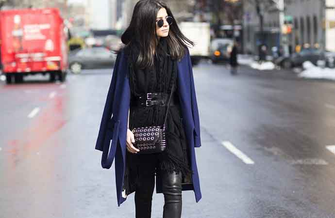

2014年12月2日，Victoria's Secret 2014大秀首度从纽约来到伦敦，这次中国天使何穗将第四次踏上“VS”的伸展台演绎第一个系列“黄金天使”和第四个系列“童话故事”。当何穗搭乘从纽约飞往伦敦的“天使”航班落地那刻起，腾讯时尚携手何穗的2014“VS”之行就正式启航。

Taylor Swift
搭配tips: 颜色是重点
对于伦敦何穗并不陌生，作为国际超模，游走四大时装周已经是习惯。“VS”大秀第一次搬到伦敦，何穗说“你知道吗？每次VS在纽约作秀都会赶上下雪，今年在伦敦，今天特别冷，我穿着羽绒服来都受不了。”这会儿的何穗已然是换上了天使们同遇到粉色拼接蕾丝的甜蜜睡衣，天生肤白的何穗就如日光灯一样闪耀其中，一双大长腿看着也是醉了。